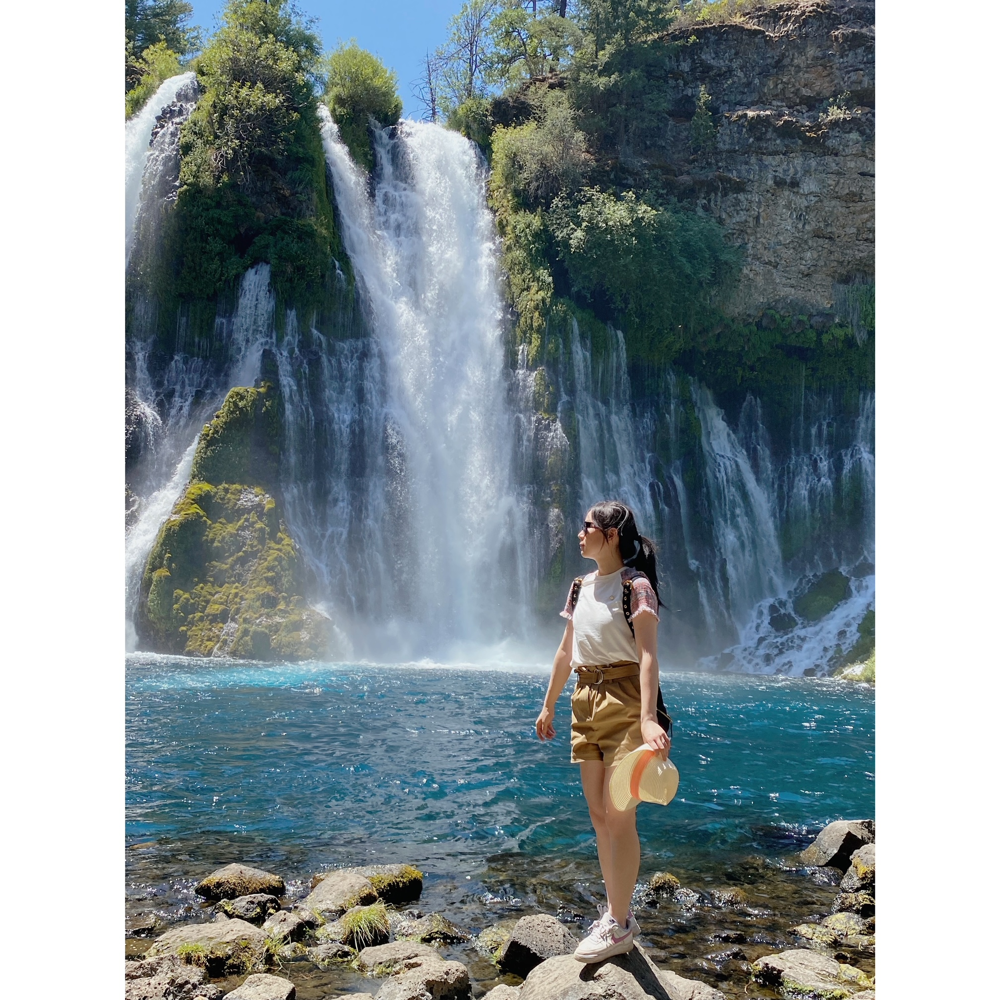
Shan Yang
Tech Lead Amazon AI Studio | Ex-Tech Lead LLM for Amazon Product Search | Ex-Tech Lead Amazon Video Search, Amazon/A9 | Xoogler
I currently drive the Amazon AI Studio initiative while continuing to advance multi-modal LLMs and video generation research. Previously I led Amazon Video Search and the LLM reranker for Amazon Product Search, and my broader interests span multi-modality perception, 3D computer vision, and physically based simulation.
Before Amazon, I was a Senior Research SDE at Google Research focusing on multi-modal content creation and 3D vision. I completed my PhD at UNC-CH under Prof. Ming C. Lin.
Publications
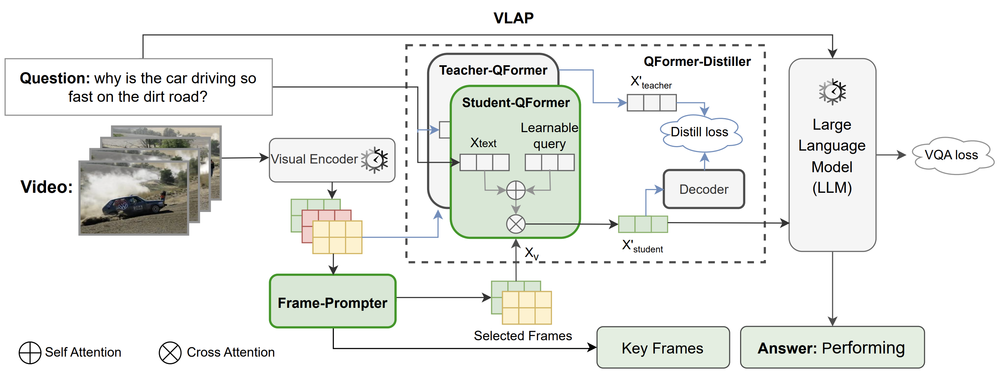
VLAP: Efficient Video-Language Alignment via Frame Prompting and Distilling for Video Question Answering
ECCV 2024
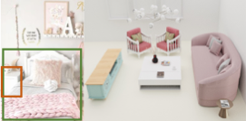
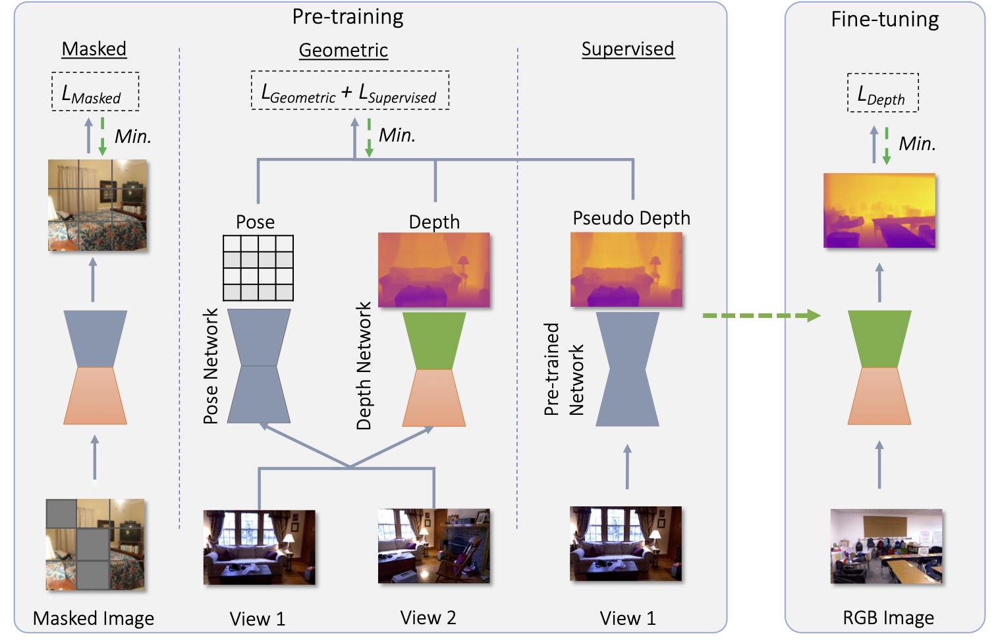
MeSa: Masked, Geometric, and Supervised Pre-training for Monocular Depth Estimation
NIPS 2023 Workshop SSLTheoryPractice
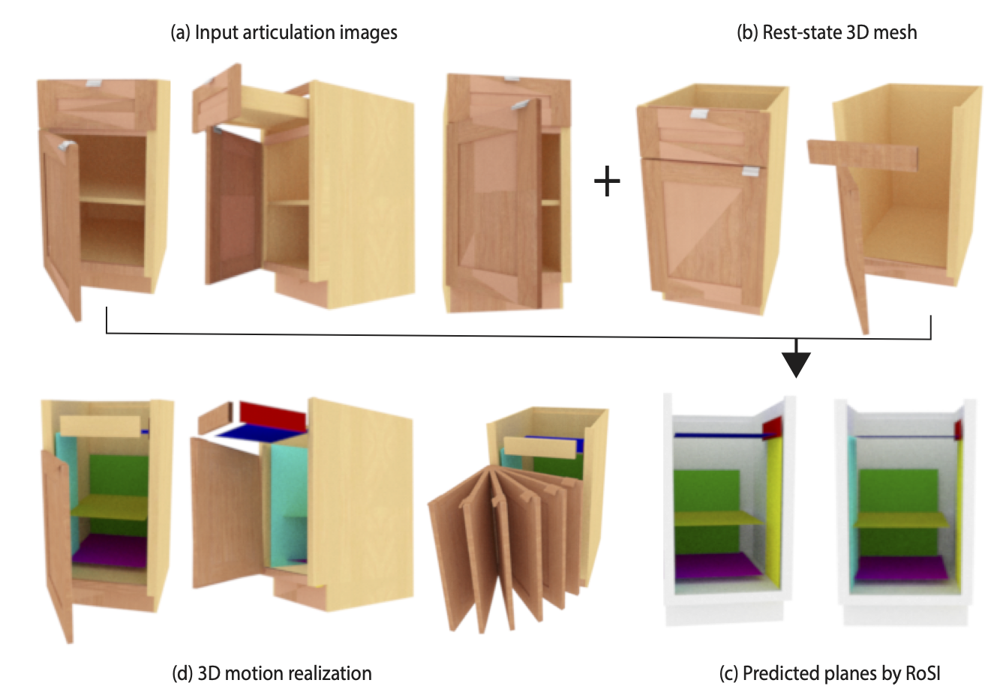
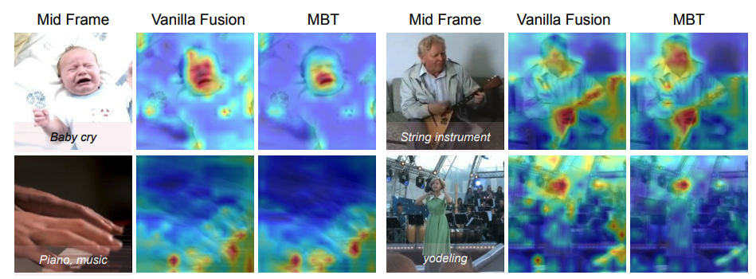

Optical Mouse: 3D Mouse Pose From Single-View Video
CVPR 2021 (CV4Animal Workshop)
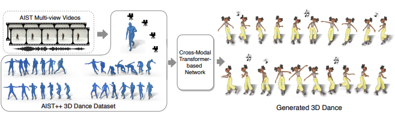
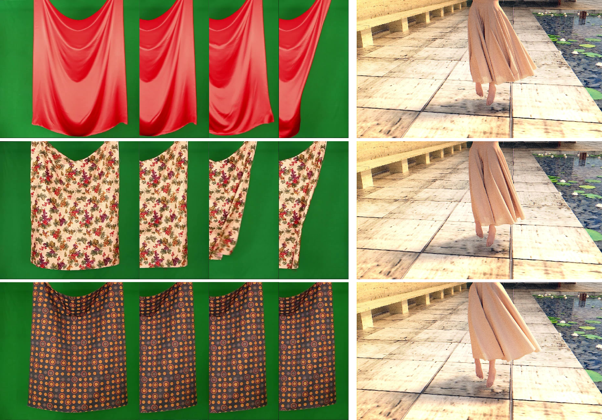
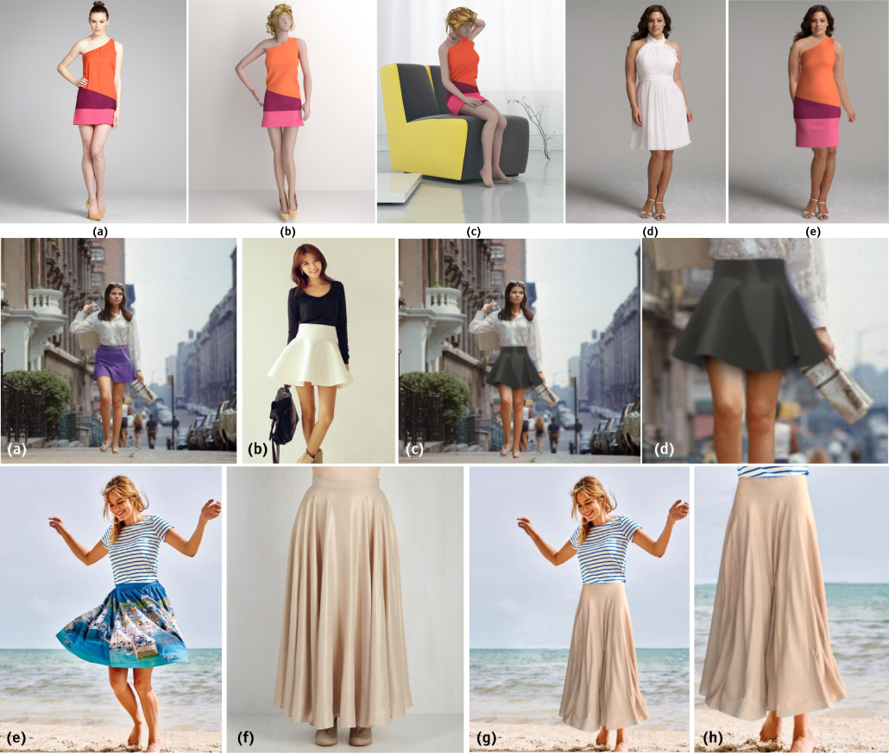
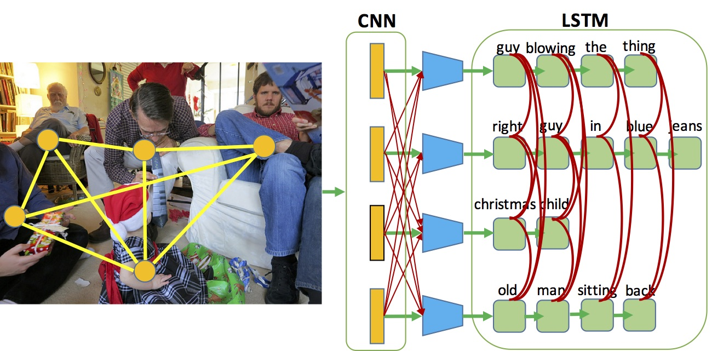
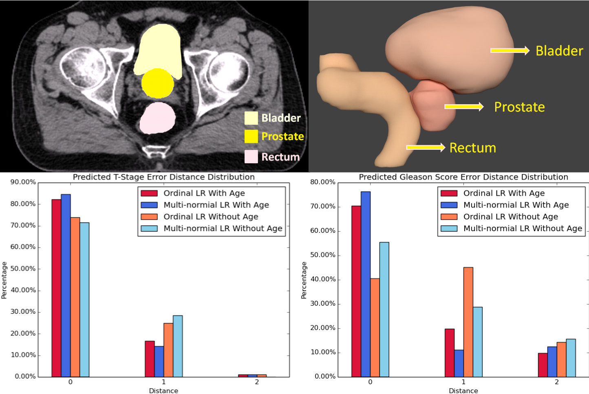
Classification of Prostate Cancer Grades and T-Stages based on Tissue Elasticity Using Medical Image Analysis
MICCAI 2016
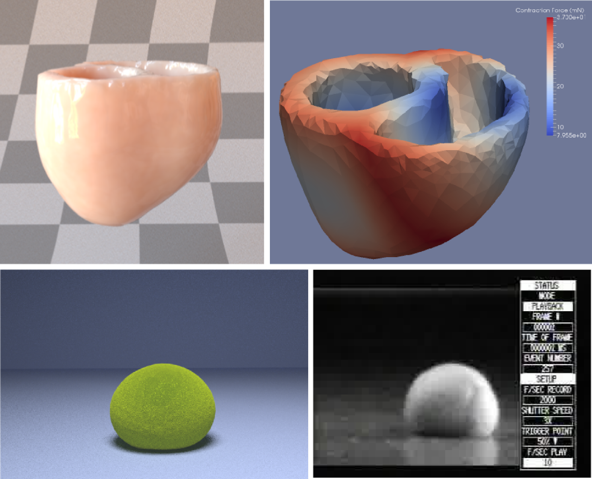
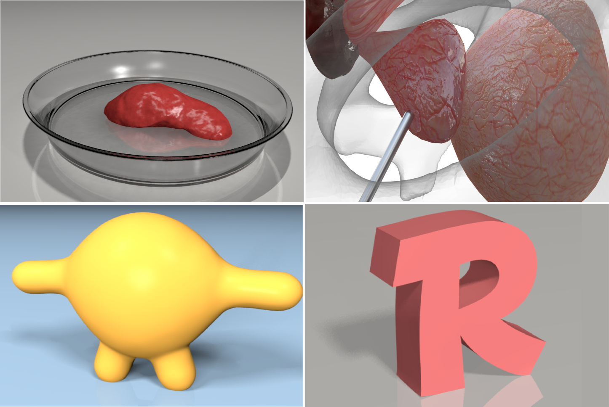
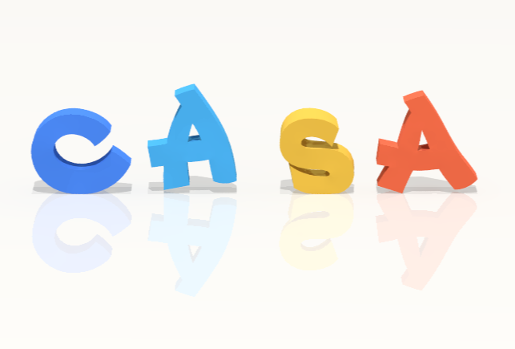
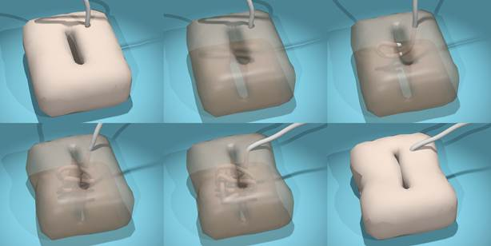
Real-time simulation for buried suture
CARS 2012
Projects
Multimodal Content Creation Training Infrastructure (MINT)
Supporting multimodal dance generation
AIST++ Dataset API
Developer tools and loaders for the AIST++ dataset
Diffusion from Scratch
Educational implementation of diffusion models
CocoCut App
Interactive creation and editing app